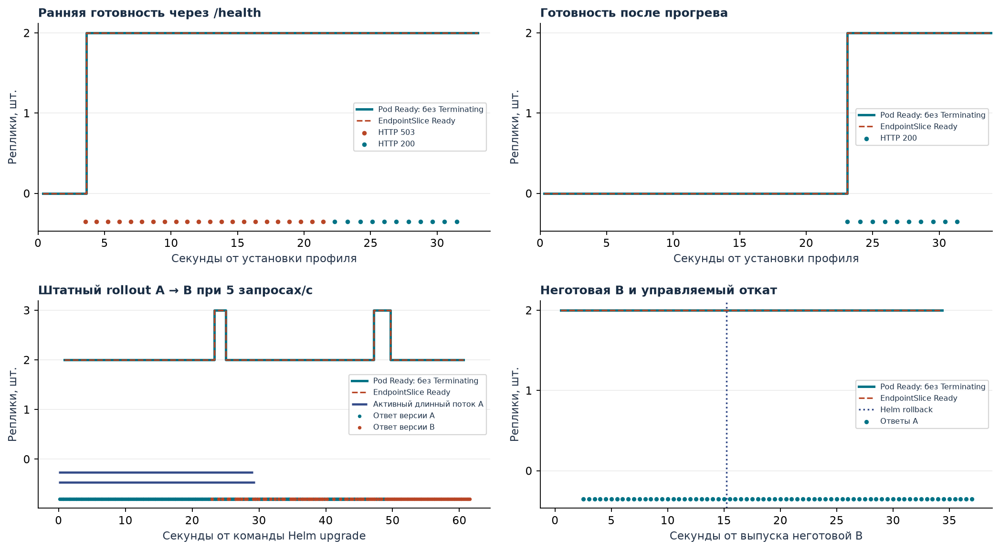
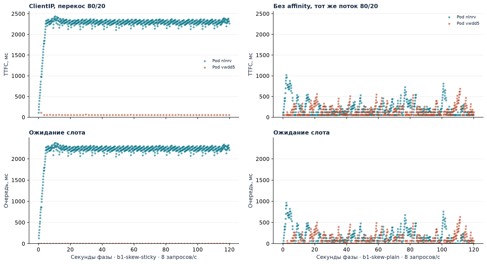
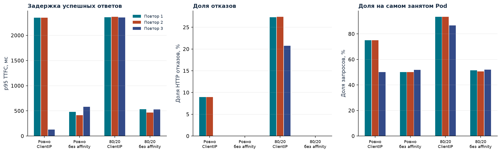
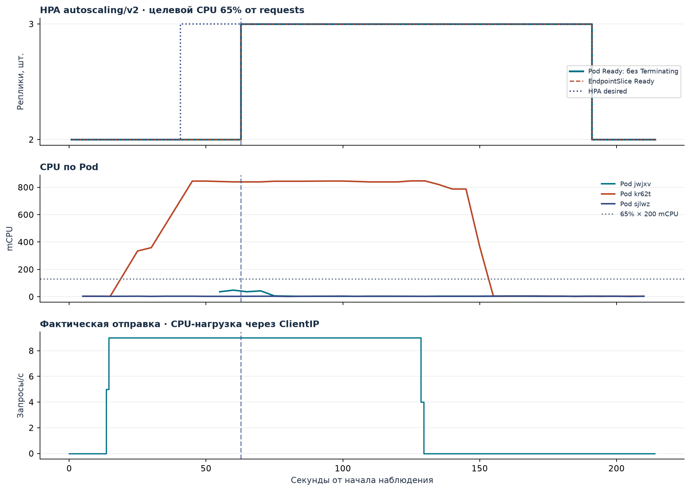

ДЗ 11. Сервис работает, пользователи ждут
FastAPI из ДЗ 8–10 в одноузловом kind. Две реплики, поток NDJSON, CPU-имитатор backend_mode=simulated.
Репозиторий GitHub · Коммит исходников c508a08ce4663aa78e9ca7dcb743a33ddc769147 · Запуск и удаление · Открыть PDF
Стенд
Docker Desktop 4.75.0, Docker Engine 29.5.2, 8 CPU и 15,59 GiB RAM, kind 0.27.0, Kubernetes 1.32.2, Helm 3.18.4. Перед запуском проверено, что свободного места достаточно для стенда. Параметры API закреплены в Helm. На один Pod запрошено 200 mCPU и 96 MiB, лимиты — 850 mCPU, 192 MiB и 128 MiB временного диска. Prometheus 3.3.1 хранит до 6 ч и до 96 MB блоков на томе до 128 MiB, том Grafana 11.6.1 ограничен 64 MiB. Есть отдельные лимиты для клиентских Pod, Prometheus, Grafana и kube-state-metrics.
Образ API занимает 48,4 MiB по Docker inspect, каталог containerd узла — 2.7G, данные Prometheus — 652.0K, Grafana — 29.7M. Прирост Docker volumes составил около 3,01 GB. Каталог containerd уже входит в Docker volume. Оценка для удаления собственного узла и его volume — около 3 GB плюс локальный кеш образов. До запуска · Фактические размеры и список Pod · Дайджесты образов
Версии имитатора A и B хранятся в образе. При старте сервис читает манифест и проверяет SHA-256 файла тем же кодом, что и в ДЗ 8–10. A после отката и на новом Pod вернула один SHA-256 6684320c6a5a73f762698b90d98a4d34ba23f107c4fbf818673ca3aa2aa8554c. В заголовках и журналах запроса сохраняются request ID, имя Pod и загруженная версия. История приходит в теле запроса. Артефакты · Ответ после отката · Ответ новой реплики
A. Прогрев, штатное обновление и откат
Гипотеза. HTTP-процесс принимает соединение раньше, чем проверен и прогрет backend. Сначала startup и readiness направлены на /health. При 20 с заданного прогрева первый готовый endpoint появился через 3,6 с после установки профиля. Сервис получил 22 запросов на непрогретый backend и вернул 503. После разделения probes первый готовый endpoint виден через 23,1 с, запросов к непрогретому backend стало 0. Пока у Service не было готовых endpoint, контрольные вызовы получили TCP-отказ до HTTP, что видно по отсутствию статуса в журнале.
/startup проверяет завершение первичного прогрева и допускает до 45 с на старте профиля. /ready проверяет пригодность загруженной версии к трафику. /health используется liveness для проверки живого процесса. Снимки Kubernetes сняты опросом, поэтому первый зафиксированный Ready может отставать от первого успешного HTTP-ответа примерно на интервал опроса.
При A→B запущено по одному 32-фрагментному потоку на каждую старую реплику. Оба пережили начало обновления, длительность составила 30,51 и 30,51 с. Один поток завершился через 4,35 с после того, как его Pod был замечен в Terminating. Первая новая B прогревалась рядом с двумя A. maxSurge=1, maxUnavailable=0, minReadySeconds=2. При удалении Pod пауза preStop 3 с даёт время обновить маршруты. Uvicorn завершает активные ответы с тайм-аутом 32 с в пределах Kubernetes grace period 45 с. Все 322 попытки завершились с HTTP 200, включая 320 запросов через Service и два длинных потока напрямую к старым Pod.
После возврата к A выпущена B с инъекцией ошибки загрузки. B появилась в EndpointSlice с ready=false, все 70 фоновых запросов отдали A. После helm rollback отдельная проверка получила A с фактическим хешем. При принудительной остановке контейнера через CRI клиент успел получить 1 из 32 фрагментов и зафиксировал незавершённый поток. Состояние Ready=false и exit 137 обнаружены через 2,2 с. Тот же Pod снова Ready через 22,1 с. После удаления Pod история PREVIOUS-STATE | CONTINUED и SHA-256 версии A подтверждены ответом новой реплики через 25,6 с после команды. Повторов на уровне HTTP-клиента в этих опытах не было.

Снимки Pod и EndpointSlice · Команды и отметки времени · Ошибка загрузки B · Обрыв потока и фрагменты
Граница проверки. Нулевой 5xx подтверждён для 5 запросов/с, клиентского тайм-аута 40 с и двух потоков продолжительностью около 30,5 с. Жёсткая остановка обходится без graceful shutdown.
B. Привязка к Pod и горячая реплика
Гипотеза. ClientIP концентрирует трафик большого клиента и может заполнить очередь, пока у второй реплики есть слоты. Сравнивались два ClusterIP Service над той же парой Pod, через kube-proxy в режиме iptables. Клиенты внутри кластера имеют четыре IP. Каждая попытка создаёт новый TCP-сеанс с Connection: close. IP в журнале backend совпадает с Pod IP клиента. Профиль even даёт 240 запросов на клиента, skew — 768 для клиента 0 и по 64 для трёх остальных.
В каждой комбинации 3 прогона по 120 с, 8 запросов/с и 960 попыток. Входы одинаковой длины, по четыре фрагмента с интервалом 45 мс. У реплики один слот, очередь до 12 ожидающих и тайм-аут 3 с. Локальный LRU хранит до восьми префиксов, задержка hit/miss — 8/60 мс. Pod прогреты к старту, префиксы каждой фазы новые. Расписание идентично в паре, задержка отправки проверена отдельно. Пилот выявил насыщение пула клиента по отставанию от плана, после чего выделили 96 рабочих потоков на клиент и повторили всю матрицу.
| Повтор | Трафик | Affinity | Запросов по Pod | Успешно | HTTP отказов | TTFC p50, мс | TTFC p95, мс | Полный p50, мс | Полный p95, мс | Cache hit¹ | Отставание p95, мс |
|---|---|---|---|---|---|---|---|---|---|---|---|
| 1 | 25/25/25/25 | ClientIP | 720 / 240 | 874 | 86 (9,0%) | 2200,0 | 2350,5 | 2336,8 | 2488,4 | 99,5% | 2,3 |
| 1 | 25/25/25/25 | None | 481 / 479 | 960 | 0 (0,0%) | 125,5 | 478,2 | 263,4 | 615,0 | 99,2% | 2,4 |
| 1 | 80/20 | ClientIP | 896 / 64 | 698 | 262 (27,3%) | 2284,9 | 2360,7 | 2421,8 | 2498,5 | 99,4% | 2,7 |
| 1 | 80/20 | None | 494 / 466 | 960 | 0 (0,0%) | 131,7 | 531,1 | 269,3 | 669,6 | 99,4% | 2,7 |
| 2 | 25/25/25/25 | ClientIP | 720 / 240 | 874 | 86 (9,0%) | 2201,3 | 2350,8 | 2339,1 | 2488,4 | 99,5% | 2,3 |
| 2 | 25/25/25/25 | None | 481 / 479 | 960 | 0 (0,0%) | 127,4 | 412,3 | 265,3 | 549,2 | 99,2% | 2,4 |
| 2 | 80/20 | ClientIP | 896 / 64 | 697 | 263 (27,4%) | 2286,4 | 2367,5 | 2423,4 | 2505,9 | 99,4% | 2,8 |
| 2 | 80/20 | None | 485 / 475 | 960 | 0 (0,0%) | 123,6 | 468,3 | 261,2 | 605,5 | 99,3% | 2,8 |
| 3 | 25/25/25/25 | ClientIP | 480 / 480 | 960 | 0 (0,0%) | 114,1 | 126,4 | 252,3 | 264,4 | 99,6% | 2,6 |
| 3 | 25/25/25/25 | None | 497 / 463 | 960 | 0 (0,0%) | 126,3 | 578,8 | 264,2 | 716,3 | 99,2% | 2,7 |
| 3 | 80/20 | ClientIP | 832 / 128 | 761 | 199 (20,7%) | 2252,1 | 2356,6 | 2388,7 | 2493,8 | 99,5% | 2,7 |
| 3 | 80/20 | None | 499 / 461 | 960 | 0 (0,0%) | 134,8 | 526,4 | 273,2 | 662,6 | 99,2% | 2,8 |
¹ Доля попаданий среди полных ответов. В каждом прогоне 960 отправок, 0 тайм-аутов и 0 обрывов. Плановая доля горячего клиента относится к отправкам, а доля по Pod учитывает и HTTP-отказы.
В профиле B с максимальным перекосом выбран прогон b1-skew-sticky. Покажем очередь и TTFC по двум Pod для него и для того же расписания на исправленной конфигурации. При равномерном профиле сохранён и случай без перекоса: [480, 480]. Его ClientIP-трасса: 10.244.0.64 → 9lbcm, 10.244.0.62 → 9lbcm, 10.244.0.56 → kzrcb, 10.244.0.53 → kzrcb. По два клиента попали на каждую реплику.
| Политика | Pod | Попыток | Успешно | Отказов | TTFC p50, мс | TTFC p95, мс | Очередь p95, мс |
|---|---|---|---|---|---|---|---|
| ClientIP | api-f558df8b7-nlnrv | 896 | 634 | 262 | 2291,4 | 2362,3 | 2305,1 |
| ClientIP | api-f558df8b7-vwdd5 | 64 | 64 | 0 | 55,6 | 61,2 | 0,4 |
| None | api-f558df8b7-nlnrv | 494 | 494 | 0 | 151,9 | 653,7 | 588,4 |
| None | api-f558df8b7-vwdd5 | 466 | 466 | 0 | 124,0 | 406,7 | 350,2 |


Изменение. Для этого трафика выбрали Service без ClientIP. p95 TTFC под перекосом менялся от 2356,6 до 2367,5 мс с ClientIP и от 468,3 до 531,1 мс после изменения. В показанной паре отказов 262 и 0, доля попаданий у успешных ответов 99,4% и 99,4%. Каждый горячий префикс после начальных промахов способен прогреться на обеих репликах. Здесь ключей мало, кеш мал и его модель упрощена. На inference engine нужны отдельные замеры KV-cache, пересчёта длинных префиксов, TTFT, TPOT, распределения по Pod и churn кеша при масштабировании. Сырые журналы всех трёх повторов и конфигурации Service
C. CPU, HPA и мониторинг
Гипотеза. Автомасштабирование по средней CPU срабатывает при достаточной суммарной нагрузке. Дополнительный Pod может простаивать, пока источник остаётся привязан к старому. HPA autoscaling/v2 использует Metrics Server 0.7.2, CPU requests по 200 mCPU, цель 65%, минимум 2 и максимум 3. При двух равных requests порог соответствует примерно 260 mCPU суммарно, с поправкой на допуск и алгоритм HPA. Если горячий Pod потребляет 200 mCPU, а второй почти простаивает, среднее около 50% даже при очереди.
Один клиент послал 9 запросов/с через ClientIP в течение 115 с. Вычислительная нагрузка — PBKDF2-HMAC-SHA256 по 320 000 итераций на фрагмент, четыре фрагмента на запрос. HPA запросил 3 реплики при CPU 90%. Третий Pod появился через 26,7 с от запланированного начала, затем прогрелся и стал Ready через 21,5 с. Трафик после его готовности по Pod: {'api-f558df8b7-kr62t': 601}. Новая реплика api-f558df8b7-jwjxv получила 0 запросов при сохранённой привязке. После окончания запросов HPA вернулся к минимуму через 73,5 с. Окно стабилизации задано 45 с, снаружи к нему добавляются периоды Metrics Server и контроллера. После возврата повторили контрольный лёгкий профиль через обычный Service.

Prometheus обнаруживает каждый API Pod отдельно, CAdvisor отдаёт CPU и RAM, kube-state-metrics отдаёт Ready по Kubernetes. Алерты проверяют окно 30 с, минимум 10 наблюдений и удержание 15 с. Пороги — p95 TTFC > 650 мс и доля HTTP-отказов > 10% среди терминальных исходов. Ниже показаны переходы от начала отправки CPU-профиля. Время перехода измерено с точностью опроса.
| Алерт | Pending, с | Firing, с | Снова inactive, с |
|---|---|---|---|
| InferenceHighTTFC | 19,9 | 34,8 | 147,1 |
| InferenceRejectedRequests | 15,0 | 34,8 | 152,2 |
HPA · Resource Metrics API · Переходы алертов · Состояние целей Prometheus · Дашборд, выгруженный из Grafana
Что измерено
На клиенте time.monotonic_ns() фиксирует плановую отправку, начало HTTP-попытки, первый содержательный NDJSON-фрагмент, каждый промежуточный фрагмент и завершение. TTFC = первый фрагмент минус отправка. Полный ответ — завершение минус отправка. Межфрагментная задержка считается между соседними частями. У ответа из одной части она отсутствует. Клиент считает поток полным при получении корректного done и ожидаемого числа частей. EOF без done — обрыв, HTTP не 200 — отказ, тайм-аут фиксируется отдельно. Перед стартом TCP отсутствие доступного endpoint обозначено как транспортная ошибка с пустым HTTP-статусом. Для асинхронного опроса и сопоставления с сервером хранится и epoch.
| Фаза | По плану | Отправлено | Завершено | Отказ | Обрыв HTTP 200 | Транспортная ошибка | Тайм-аут | HTTP 5xx | TTFC p50, мс | TTFC p95, мс | Полный p50, мс | Полный p95, мс |
|---|---|---|---|---|---|---|---|---|---|---|---|---|
| Ранний Ready | — | 35 | 11 | 22 | 0 | 2 | 0 | 22 | 55,8 | 107,8 | 56,0 | 107,9 |
| Исправленный Ready | — | 35 | 10 | 0 | 0 | 25 | 0 | 0 | 55,5 | 109,7 | 55,6 | 109,8 |
| Штатный rollout | 320 | 322 | 322 | 0 | 0 | 0 | 0 | 0 | 56,0 | 107,7 | 193,0 | 244,9 |
| Неготовая B | 70 | 70 | 70 | 0 | 0 | 0 | 0 | 0 | 55,9 | 114,7 | 192,6 | 252,3 |
| Принудительная остановка | — | 1 | 0 | 0 | 1 | 0 | 0 | 0 | — | — | — | — |
| Ограничение очереди | — | 20 | 14 | 6 | 0 | 0 | 0 | 0 | 1364,0 | 2636,0 | 1666,4 | 2938,7 |
| CPU / ClientIP | 1035 | 1035 | 137 | 898 | 0 | 0 | 0 | 0 | 3052,1 | 3222,1 | 3696,2 | 3993,7 |
| Контроль C | 330 | 330 | 330 | 0 | 0 | 0 | 0 | 0 | 45,9 | 54,4 | 117,0 | 128,0 |
Отдельно для тихого профиля C межфрагментная задержка p50/p95 равна 35,5 / 36,4 мс. В B и C метрики имитатора выражены в миллисекундах на части ответа. Для проверки на реальном backend TTFT идёт до первого содержательного токена. TPOT = (время последнего токена − время первого) / (N−1), где N — число выходных токенов фактического tokenizer inference engine. При N=1 TPOT отсутствует. N можно получить из токенизированного префикса/окончания с фиксированной версией tokenizer или непосредственно из идентификаторов, возвращаемых engine. Подключение настоящих весов и соответствующие измерения относятся к дополнительному опыту.
Клиент и Prometheus в одном контрольном окне
Для выбранного 30-секундного окна взяли разность накопленных bucket-счётчиков двух снимков без рестартов, сохранили le и сложили по Pod. Реальные границы scrape для каждого Pod сопоставлены с клиентским журналом по времени завершения только успешных запросов. Во временных рядах дашборда используется rate(...[30s]) с агрегацией sum by (pod, le). Request ID и session ID хранятся в журнале, а метки ограничены Pod и исходом запроса.
histogram_quantile(0.95, sum by (le) ( api_ttfc_seconds_bucket - api_ttfc_seconds_bucket offset 30s ))
| Pod | Начальный scrape (МСК) | Конечный scrape (МСК) |
|---|---|---|
| api-f558df8b7-sjlwz | 20:41:28.969 | 20:41:58.968 |
| api-f558df8b7-kr62t | 20:41:29.136 | 20:41:59.134 |
| Источник TTFC | Число ответов | p50, мс | p95, мс |
|---|---|---|---|
| Клиент | 180 | 46,0 | 51,7 |
| Prometheus | 180 | 37,7 | 49,2 |
Разность числа наблюдений Prometheus и клиента: 0. Сервер измеряет время от входа в обработчик до отправки первого фрагмента, клиент включает транспорт, а Prometheus интерполирует внутри bucket. Поэтому перцентили могут расходиться при близком или одинаковом объёме выборки. PromQL всех панелей · Общий JSONL с сырыми попытками
Собственные проверки
- Ранняя готовность воспроизводится, после исправления запрос непрогретой реплике через Service не проходит. До · После
- После управляемого отката Kubernetes API-сервис отвечает с версией A и ожидаемым SHA-256. Результат
- После замены Pod подтверждены новое имя, готовность, версия A, прежний хеш и продолжение диалога. Артефакт · Диалог
- Отклонённые попытки получают 429. Поток с HTTP 200 и одним фрагментом классифицирован как обрыв после принудительной остановки. 429 · Обрыв
- Два параллельных диалога на одном Pod вернули
BLUE-1 | BLUE-2иORANGE-1 | ORANGE-2. Результат
Ревью PR «Постоянная привязка диалога к Pod»
Новый запрос стоит направить на B. Реплика A уже держит префикс в кеше, но освободится через 3 с. Свободная B пересчитает префикс за 0,8 с и при равных остальных затратах начнёт генерацию примерно на 2,2 с раньше. Для выбора реплики в рабочем сервисе нужны оценки времени в очереди и пересчёта префикса, данные о свободных слотах и памяти KV-кеша, а также p95 TTFT и доля отказов для входов разной длины.
Запрос принимается, если у готовой реплики есть ресурс, а прогноз времени до первого токена укладывается в оставшийся бюджет задержки. При перегрузке очередь ограничена по размеру и времени ожидания. Запросы за этими пределами получают HTTP 429. При потере A следующая реплика загружает нужную версию модели и восстанавливает контекст из истории, переданной клиентом или сохранённой вне Pod.
Начатый поток остаётся на том же Pod до завершения. При штатном удалении ему дают завершиться в пределах grace period. При внезапном отказе клиент фиксирует обрыв. Повтор оформляется как новая попытка с отдельным request ID, связанным с исходным. Части двух попыток нельзя объединять в один ответ.
В кейсе Vertex AI из лекции команда Google повысила вес очереди при выборе реплики в GKE Inference Gateway и ограничила допуск запросов. Доля попаданий в кеш выросла с 35% до 70%, а p95 TTFT при всплесках диалоговой нагрузки DeepSeek V3.1 снизился на 52%. На реальном inference engine эти же метрики позволят оценить, где выигрыш от локальности кеша оправдывает ожидание в очереди.
Выбранный кейс — Vertex AI и GKE Inference Gateway (первоисточник Google Cloud)